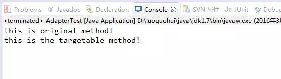

(点击上方公众号，可快速关注)
来源：小宝鸽
链接：http://blog.csdn.net/u013142781/article/details/50821155
总体来说设计模式分为三大类：创建型模式、结构型模式和行为型模式。
博主的上一篇文章已经提到过创建型模式，此外该文章还有设计模式概况和设计模式的六大原则。设计模式的六大原则是设计模式的核心思想，详情请看博主的另外一篇文章： Java经典设计模式之五大创建模式（附实例和详解）。
接下来我们看看结构型模式，共七种：适配器模式、装饰器模式、代理模式、外观模式、桥接模式、组合模式、享元模式。其中适配器模式主要分为三类：类的适配器模式、对象的适配器模式、接口的适配器模式。其中的对象的适配器模式是各种结构型模式的起源。
一、适配器模式
适配器模式主要分为三类：类的适配器模式、对象的适配器模式、接口的适配器模式。
适配器模式将某个类的接口转换成客户端期望的另一个接口表示，目的是消除由于接口不匹配所造成的类的兼容性问题。有点抽象，我们来看看详细的内容。
1.1、类的适配器模式
类的适配器模式核心思想就是：有一个Source类，拥有一个方法，待适配，目标接口是Targetable，通过Adapter类，将Source的功能扩展到Targetable里。
package com.model.structure;
public class Source {
public void method1() {
System.out.println("this is original method!");
}
}
package com.model.structure;
public interface Targetable {
/* 与原类中的方法相同 */
public void method1();
/* 新类的方法 */
public void method2();
}
package com.model.structure;
public class Adapter extends Source implements Targetable {
public void method2() {
System.out.println("this is the targetable method!");
}
}
package com.model.structure;
public class AdapterTest {
public static void main(String[] args) {
Targetable target = new Adapter();
target.method1();
target.method2();
}
}
AdapterTest的运行结果：

1.2、对象的适配器模式
对象的适配器模式的基本思路和类的适配器模式相同，只是将Adapter类作修改成Wrapper，这次不继承Source类，而是持有Source类的实例，以达到解决兼容性的问题。
package com.model.structure;
public class Wrapper implements Targetable {
private Source source;
public Wrapper(Source source) {
super();
this.source = source;
}
@Override
public void method2() {
System.out.println("this is the targetable method!");
}
@Override
public void method1() {
source.method1();
}
}
package com.model.structure;
public class AdapterTest {
public static void main(String[] args) {
Source source = new Source();
Targetable target = new Wrapper(source);
target.method1();
target.method2();
}
}
运行结果跟类的适配器模式例子的一样。
1.3、接口的适配器模式
接口的适配器是这样的：有时我们写的一个接口中有多个抽象方法，当我们写该接口的实现类时，必须实现该接口的所有方法，这明显有时比较浪费，因为并不是所有的方法都是我们需要的，有时只需要某一些，此处为了解决这个问题，我们引入了接口的适配器模式，借助于一个抽象类，该抽象类实现了该接口，实现了所有的方法，而我们不和原始的接口打交道，只和该抽象类取得联系，所以我们写一个类，继承该抽象类，重写我们需要的方法就行了。
这里看文字描述已经试够清楚的了，因此就不贴代码实例了。
二、装饰模式
装饰模式：在不必改变原类文件和使用继承的情况下，动态地扩展一个对象的功能。它是通过创建一个包装对象，也就是装饰来包裹真实的对象。
装饰模式的特点：
（1） 装饰对象和真实对象有相同的接口。这样客户端对象就能以和真实对象相同的方式和装饰对象交互。
（2） 装饰对象包含一个真实对象的引用（reference）
（3） 装饰对象接受所有来自客户端的请求。它把这些请求转发给真实的对象。
（4） 装饰对象可以在转发这些请求以前或以后增加一些附加功能。这样就确保了在运行时，不用修改给定对象的结构就可以在外部增加附加的功能。在面向对象的设计中，通常是通过继承来实现对给定类的功能扩展。继承不能做到这一点，继承的功能是静态的，不能动态增删。
具体看看代码实例
package com.model.structure;
public interface Sourceable {
public void method();
}
package com.model.structure;
public class Source implements Sourceable {
@Override
public void method() {
System.out.println("the original method!");
}
}
package com.model.structure;
public class Decorator implements Sourceable {
private Sourceable source;
public Decorator(Sourceable source) {
super();
this.source = source;
}
@Override
public void method() {
System.out.println("before decorator!");
source.method();
System.out.println("after decorator!");
}
}
package com.model.structure;
public class DecoratorTest {
public static void main(String[] args) {
//（1） 装饰对象和真实对象有相同的接口。这样客户端对象就能以和真实对象相同的方式和装饰对象交互。
//（2） 装饰对象包含一个真实对象的引用（reference）
//（3） 装饰对象接受所有来自客户端的请求。它把这些请求转发给真实的对象。
//（4） 装饰对象可以在转发这些请求以前或以后增加一些附加功能。这样就确保了在运行时，不用修改给定对象的结构就可以在外部增加附加的功能。
// 在面向对象的设计中，通常是通过继承来实现对给定类的功能扩展。
// 继承不能做到这一点，继承的功能是静态的，不能动态增删。
Sourceable source = new Source();
Sourceable obj = new Decorator(source);
obj.method();
}
}
运行结果：
before decorator!
the original method!
after decorator!
三、代理模式
代理模式就是多一个代理类出来，替原对象进行一些操作。代理类就像中介，它比我们掌握着更多的信息。
具体看看代码实例。
package com.model.structure;
public interface Sourceable {
public void method();
}
package com.model.structure;
public class Source implements Sourceable {
@Override
public void method() {
System.out.println("the original method!");
}
}
package com.model.structure;
public class Proxy implements Sourceable {
private Source source;
public Proxy() {
super();
this.source = new Source();
}
@Override
public void method() {
before();
source.method();
atfer();
}
private void atfer() {
System.out.println("after proxy!");
}
private void before() {
System.out.println("before proxy!");
}
}
package com.model.structure;
public class ProxyTest {
public static void main(String[] args) {
Sourceable source = new Proxy();
source.method();
}
}
运行结果：
before proxy!
the original method!
after proxy!
四、外观模式
外观模式是为了解决类与类之间的依赖关系的，像spring一样，可以将类和类之间的关系配置到配置文件中，而外观模式就是将他们的关系放在一个Facade类中，降低了类类之间的耦合度，该模式中没有涉及到接口。
我们以一个计算机的启动过程为例，看看如下的代码：
package com.model.structure;
public class CPU {
public void startup() {
System.out.println("cpu startup!");
}
public void shutdown() {
System.out.println("cpu shutdown!");
}
}
package com.model.structure;
public class Disk {
public void startup() {
System.out.println("disk startup!");
}
public void shutdown() {
System.out.println("disk shutdown!");
}
}
package com.model.structure;
public class Memory {
public void startup() {
System.out.println("memory startup!");
}
public void shutdown() {
System.out.println("memory shutdown!");
}
}
package com.model.structure;
public class Computer {
private CPU cpu;
private Memory memory;
private Disk disk;
public Computer() {
cpu = new CPU();
memory = new Memory();
disk = new Disk();
}
public void startup() {
System.out.println("start the computer!");
cpu.startup();
memory.startup();
disk.startup();
System.out.println("start computer finished!");
}
public void shutdown() {
System.out.println("begin to close the computer!");
cpu.shutdown();
memory.shutdown();
disk.shutdown();
System.out.println("computer closed!");
}
}
package com.model.structure;
public class User {
public static void main(String[] args) {
Computer computer = new Computer();
computer.startup();
computer.shutdown();
}
}
运行结果：
start the computer!
cpu startup!
memory startup!
disk startup!
start computer finished!
begin to close the computer!
cpu shutdown!
memory shutdown!
disk shutdown!
computer closed!
五、桥接模式
在软件系统中，某些类型由于自身的逻辑，它具有两个或多个维度的变化，那么如何应对这种“多维度的变化”？如何利用面向对象的技术来使得该类型能够轻松的沿着多个方向进行变化，而又不引入额外的复杂度？这就要使用Bridge模式。
在提出桥梁模式的时候指出，桥梁模式的用意是”将抽象化(Abstraction)与实现化(Implementation)脱耦，使得二者可以独立地变化”。这句话有三个关键词，也就是抽象化、实现化和脱耦。
抽象化：存在于多个实体中的共同的概念性联系，就是抽象化。作为一个过程，抽象化就是忽略一些信息，从而把不同的实体当做同样的实体对待。
实现化：抽象化给出的具体实现，就是实现化。
脱耦：所谓耦合，就是两个实体的行为的某种强关联。而将它们的强关联去掉，就是耦合的解脱，或称脱耦。在这里，脱耦是指将抽象化和实现化之间的耦合解脱开，或者说是将它们之间的强关联改换成弱关联。
下面我们来看看代码实例：
package com.model.structure;
public interface Driver {
public void connect();
}
package com.model.structure;
public class MysqlDriver implements Driver {
@Override
public void connect() {
System.out.println("connect mysql done!");
}
}
package com.model.structure;
public class DB2Driver implements Driver {
@Override
public void connect() {
System.out.println("connect db2 done!");
}
}
package com.model.structure;
public abstract class DriverManager {
private Driver driver;
public void connect() {
driver.connect();
}
public Driver getDriver() {
return driver;
}
public void setDriver(Driver driver) {
this.driver = driver;
}
}
package com.model.structure;
public class MyDriverManager extends DriverManager {
public void connect() {
super.connect();
}
}
package com.model.structure;
public class Client {
public static void main(String[] args) {
DriverManager driverManager = new MyDriverManager();
Driver driver1 = new MysqlDriver();
driverManager.setDriver(driver1);
driverManager.connect();
Driver driver2 = new DB2Driver();
driverManager.setDriver(driver2);
driverManager.connect();
}
}
执行结果：
connect mysql done!
connect db2 done!
如果看完代码实例还不是很理解，我们想想如下两个维度扩展：（1）假设我想加一个OracleDriver，这是一个维度，很好理解，不多解释。（2）假设我们想在连接前后固定输出点什么，我们只需要加一个MyDriverManager2，代码如下：
package com.model.structure;
public class MyDriverManager2 extends DriverManager {
public void connect() {
System.out.println("before connect");
super.connect();
System.out.println("after connect");
}
}
再将Client代码中的MyDriverManager 改成 MyDriverManager2 ，执行结果如下：
before connect
connect mysql done!
after connect
before connect
connect db2 done!
after connect
六、组合模式
组合模式，将对象组合成树形结构以表示“部分-整体”的层次结构，组合模式使得用户对单个对象和组合对象的使用具有一致性。掌握组合模式的重点是要理解清楚 “部分/整体” 还有 ”单个对象“ 与 “组合对象” 的含义。
组合模式让你可以优化处理递归或分级数据结构。
《设计模式》：将对象组合成树形结构以表示“部分整体”的层次结构。组合模式使得用户对单个对象和组合对象的使用具有一致性。
涉及角色：
Component：是组合中的对象声明接口，在适当的情况下，实现所有类共有接口的默认行为。声明一个接口用于访问和管理Component子部件。
Leaf：在组合中表示叶子结点对象，叶子结点没有子结点。
Composite：定义有枝节点行为，用来存储子部件，在Component接口中实现与子部件有关操作，如增加(add)和删除(remove)等。
比如现实中公司内各部门的层级关系，请看代码：
Component：是组合中的对象声明接口，在适当的情况下，实现所有类共有接口的默认行为。声明一个接口用于访问和管理Component子部件。
package com.model.structure;
public abstract class Company {
private String name;
public Company() {
}
public Company(String name) {
super();
this.name = name;
}
public String getName() {
return name;
}
public void setName(String name) {
this.name = name;
}
protected abstract void add(Company company);
protected abstract void romove(Company company);
protected abstract void display(int depth);
}
Composite：定义有枝节点行为，用来存储子部件，在Component接口中实现与子部件有关操作，如增加(add)和删除(remove)等。
package com.model.structure;
import java.util.ArrayList;
import java.util.List;
public class ConcreteCompany extends Company {
private List<Company> cList;
public ConcreteCompany() {
cList = new ArrayList();
}
public ConcreteCompany(String name) {
super(name);
cList = new ArrayList();
}
@Override
protected void add(Company company) {
cList.add(company);
}
@Override
protected void display(int depth) {
StringBuilder sb = new StringBuilder("");
for (int i = 0; i < depth; i++) {
sb.append("-");
}
System.out.println(new String(sb) + this.getName());
for (Company c : cList) {
c.display(depth + 2);
}
}
@Override
protected void romove(Company company) {
cList.remove(company);
}
}
Leaf：在组合中表示叶子结点对象，叶子结点没有子结点。
package com.model.structure;
public class HRDepartment extends Company {
public HRDepartment(String name) {
super(name);
}
@Override
protected void add(Company company) {
}
@Override
protected void display(int depth) {
StringBuilder sb = new StringBuilder("");
for (int i = 0; i < depth; i++) {
sb.append("-");
}
System.out.println(new String(sb) + this.getName());
}
@Override
protected void romove(Company company) {
}
}
package com.model.structure;
public class FinanceDepartment extends Company {
public FinanceDepartment(String name) {
super(name);
}
@Override
protected void add(Company company) {
}
@Override
protected void display(int depth) {
StringBuilder sb = new StringBuilder("");
for (int i = 0; i < depth; i++) {
sb.append("-");
}
System.out.println(new String(sb) + this.getName());
}
@Override
protected void romove(Company company) {
}
}
Client：
package com.model.structure;
public class Client {
public static void main(String[] args) {
Company root = new ConcreteCompany();
root.setName("北京总公司");
root.add(new HRDepartment("总公司人力资源部"));
root.add(new FinanceDepartment("总公司财务部"));
Company shandongCom = new ConcreteCompany("山东分公司");
shandongCom.add(new HRDepartment("山东分公司人力资源部"));
shandongCom.add(new FinanceDepartment("山东分公司账务部"));
Company zaozhuangCom = new ConcreteCompany("枣庄办事处");
zaozhuangCom.add(new FinanceDepartment("枣庄办事处财务部"));
zaozhuangCom.add(new HRDepartment("枣庄办事处人力资源部"));
Company jinanCom = new ConcreteCompany("济南办事处");
jinanCom.add(new FinanceDepartment("济南办事处财务部"));
jinanCom.add(new HRDepartment("济南办事处人力资源部"));
shandongCom.add(jinanCom);
shandongCom.add(zaozhuangCom);
Company huadongCom = new ConcreteCompany("上海华东分公司");
huadongCom.add(new HRDepartment("上海华东分公司人力资源部"));
huadongCom.add(new FinanceDepartment("上海华东分公司账务部"));
Company hangzhouCom = new ConcreteCompany("杭州办事处");
hangzhouCom.add(new FinanceDepartment("杭州办事处财务部"));
hangzhouCom.add(new HRDepartment("杭州办事处人力资源部"));
Company nanjingCom = new ConcreteCompany("南京办事处");
nanjingCom.add(new FinanceDepartment("南京办事处财务部"));
nanjingCom.add(new HRDepartment("南京办事处人力资源部"));
huadongCom.add(hangzhouCom);
huadongCom.add(nanjingCom);
root.add(shandongCom);
root.add(huadongCom);
root.display(0);
}
}
运行结果：
北京总公司
--总公司人力资源部
--总公司财务部
--山东分公司
----山东分公司人力资源部
----山东分公司账务部
----济南办事处
------济南办事处财务部
------济南办事处人力资源部
----枣庄办事处
------枣庄办事处财务部
------枣庄办事处人力资源部
--上海华东分公司
----上海华东分公司人力资源部
----上海华东分公司账务部
----杭州办事处
------杭州办事处财务部
------杭州办事处人力资源部
----南京办事处
------南京办事处财务部
------南京办事处人力资源部
【今日微信公号推荐↓】
更多推荐请看《值得关注的技术和设计公众号》
其中推荐了包括技术、设计、极客和IT相亲相关的热门公众号。技术涵盖：Python、Web前端、Java、安卓、iOS、PHP、C/C++、.NET、Linux、数据库、运维、大数据、算法、IT职场等。点击《值得关注的技术和设计公众号》，发现精彩！

![]()